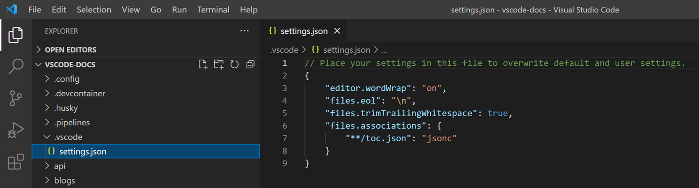
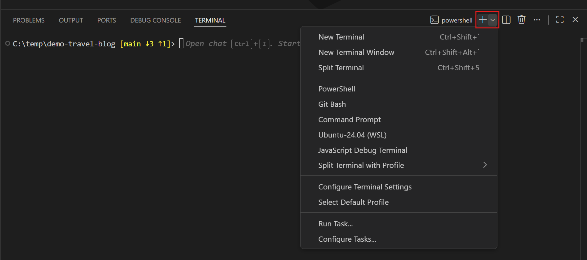
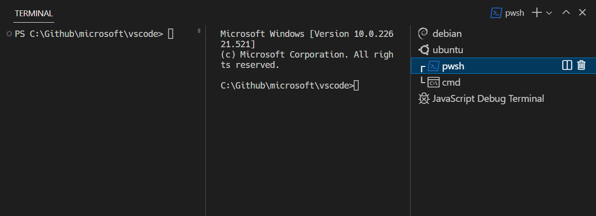

VS Code#
VS Code est l’éditeur de code du module. Seul, il ne sait pas exécuter du Python : il lui faut l’extension Python, et pour les notebooks l’extension Jupyter. Une extension est un module qu’on ajoute à VS Code. Cette page décrit ce qui sert dans tous les cas ; les deux pages suivantes décrivent la configuration pour Python et pour les notebooks.
Lancer VS Code et ouvrir un dossier#
Menu Démarrer, taper visual studio code, Entrée. Puis menu File, Open
Folder, et choisir le dossier du TD. VS Code ouvre toujours un dossier, pas
un fichier isolé : le dossier est le projet, et l’explorateur de gauche en
montre le contenu.
À la première ouverture d’un dossier, VS Code demande si on fait confiance à ses auteurs. Répondre « Yes, I trust the authors ». Sans cette réponse, VS Code reste en « Restricted Mode » et l’extension Python ne se charge pas (V4).
Lancer VS Code depuis l’Anaconda Prompt#
Quand Navigator est lent ou ne s’ouvre pas, VS Code se lance aussi depuis
l’Anaconda Prompt. Taper code suivi d’une espace, puis glisser le dossier
du TD depuis l’explorateur dans la fenêtre, ce qui écrit son chemin, puis
Entrée :
(base) C:\Users\eleve>code "C:\Users\eleve\Desktop\cours1\2a_vscode_python"
VS Code s’ouvre sur ce dossier. Lancé ainsi, il connaît l’environnement
actif dans la fenêtre, ce qui aide au choix de l’interpréteur
(V6) ; le réglage du terminal reste nécessaire
(Python et environnement conda). Si la réponse est
'code' n'est pas reconnu, taper le chemin complet de la commande à la
place de code : "C:\Program Files\Microsoft VS Code\bin\code.cmd", ou
"%LOCALAPPDATA%\Programs\Microsoft VS Code\bin\code.cmd" selon
l’installation (V1).
La palette de commandes#
Ctrl + Maj + P (ou F1) ouvre une zone de saisie en haut de la
fenêtre. On y tape le début du nom d’une commande et on la choisit dans la
liste. Toutes les consignes du module passent par elle, par exemple
« Python: Select Interpreter » ou « Developer: Reload Window ».
Le panneau Extensions#
Ctrl + Maj + X ouvre le panneau Extensions sur la gauche. On y tape
le nom d’une extension (python), on la choisit dans la liste, et on
clique Install.
Avertissement
Installer une extension demande une connexion réseau qui fonctionne : les extensions sont téléchargées depuis un serveur. Sur les postes de la salle, ouvrir la session réseau avant (Premiers tests du poste). Sans réseau, le panneau reste vide ou l’installation ne finit pas (V3).
Les réglages#
Tout ce qui se règle dans VS Code est enregistré dans des fichiers
settings.json. Il y en a deux niveaux :
User : les réglages du compte, valables pour tous les dossiers ouverts sur ce poste. Le fichier est
C:\Users\<nom>\AppData\Roaming\Code\User\settings.json;Workspace : les réglages du dossier ouvert. Le fichier est
.vscode\settings.jsondans ce dossier ; il voyage avec le dossier, par exemple dans l’archive d’un TD.
Quand un réglage est présent aux deux niveaux, celui du dossier l’emporte.
{kind=link}

Le fichier .vscode\settings.json d’un dossier, dans l’explorateur et
dans l’éditeur (documentation VS Code, CC BY 3.0 US).#
Deux façons de les modifier, au choix :
l’interface : palette (
Ctrl+Maj+P), « Preferences: Open Settings (UI) », ouCtrl+,. Une zone de recherche en haut, deux onglets User et Workspace, et un champ par réglage. Ce qu’on y écrit est enregistré aussitôt ;le fichier : palette, « Preferences: Open User Settings (JSON) » ou « Preferences: Open Workspace Settings (JSON) ». C’est le même contenu, en texte ; c’est la forme qu’on recopie depuis une page comme celle-ci.

La page des réglages, onglet User (documentation VS Code, CC BY 3.0 US).#

Le même contenu, dans le fichier settings.json du compte (documentation
VS Code, CC BY 3.0 US).#
Dans le fichier, chaque réglage s’écrit "nom": valeur, les réglages sont
séparés par des virgules, et l’ensemble est entre accolades. Les chemins
Windows s’y écrivent avec des barres obliques inverses doublées. Les deux
réglages de l’exemple sont ceux de Python et environnement
conda ; les fichiers complets des postes de la salle
sont dans Fichiers de réglages :
{
"python.defaultInterpreterPath": "C:\\ProgramData\\anaconda3\\python.exe",
"python.condaPath": "C:\\ProgramData\\anaconda3\\Scripts\\conda.exe"
}
Une erreur dans ce fichier se voit à une ligne soulignée en rouge (V10).
Le terminal#
Le terminal est une fenêtre de commandes à l’intérieur de VS Code
(Les terminaux). Menu
Terminal, New Terminal l’ouvre en bas de la fenêtre (le raccourci clavier
dépend du clavier, V9). Par défaut, c’est un PowerShell.
Sur les postes de la salle, il faut lui substituer un cmd, que
l’extension Python sait activer : c’est le réglage décrit dans Python et
environnement conda.
Choisir le terminal à ouvrir#
En haut à droite du panneau du terminal, le bouton + ouvre un nouveau
terminal, du type par défaut. La petite flèche juste à sa droite ouvre la
liste des types de terminal que VS Code connaît, ses profils :
PowerShell, Command Prompt (le cmd), Git Bash quand il est installé
(Git et Git Bash). Cliquer sur un nom ouvre un nouveau terminal
de ce type.
{kind=link}

La flèche à côté du +, et la liste des profils (documentation VS Code,
CC BY 3.0 US).#
En bas de la même liste, « Select Default Profile » change le type ouvert
par le + et par le menu Terminal, New Terminal.
Voir les terminaux ouverts#
Ouvrir un terminal ne ferme pas le précédent. Avec un seul terminal
ouvert, son nom est écrit en haut à droite du panneau, à gauche du +
(« powershell » dans la capture précédente). À partir de deux, une liste
apparaît sur la droite du panneau, une ligne par terminal, avec l’icône et
le nom de son type. La ligne surlignée est le terminal affiché, celui qui
reçoit ce qu’on tape ; cliquer sur une autre ligne affiche l’autre
terminal. L’icône de corbeille, au survol d’une ligne, ferme ce terminal.
{kind=link}

La liste des terminaux ouverts, à droite du panneau. Ici, pwsh
(PowerShell) et cmd sont affichés côte à côte, ce que le trait qui les
relie dans la liste indique (documentation VS Code, CC BY 3.0 US).#
L’invite dit aussi dans quel terminal on se trouve : celle de PowerShell
commence par PS, celle du cmd se termine par >, et celle de Git Bash
par $.
Fichiers utiles#
Quoi |
Où |
|---|---|
Réglages du compte ( |
palette, « Preferences: Open User Settings (JSON) » ; sur le disque, |
Réglages du dossier ouvert |
|
Extensions installées |
|
Journaux des extensions |
panneau Output ( |
Source des captures d’écran#
Les captures de cette page viennent de la documentation de Visual Studio Code (Microsoft), publiée sous licence Creative Commons Attribution 3.0 US.
Documentation officielle#
Getting started with Python in VS Code (en anglais) : extension Python, interpréteur, exécution d’un fichier.
Jupyter Notebooks in VS Code (en anglais) : extension Jupyter, choix du noyau.